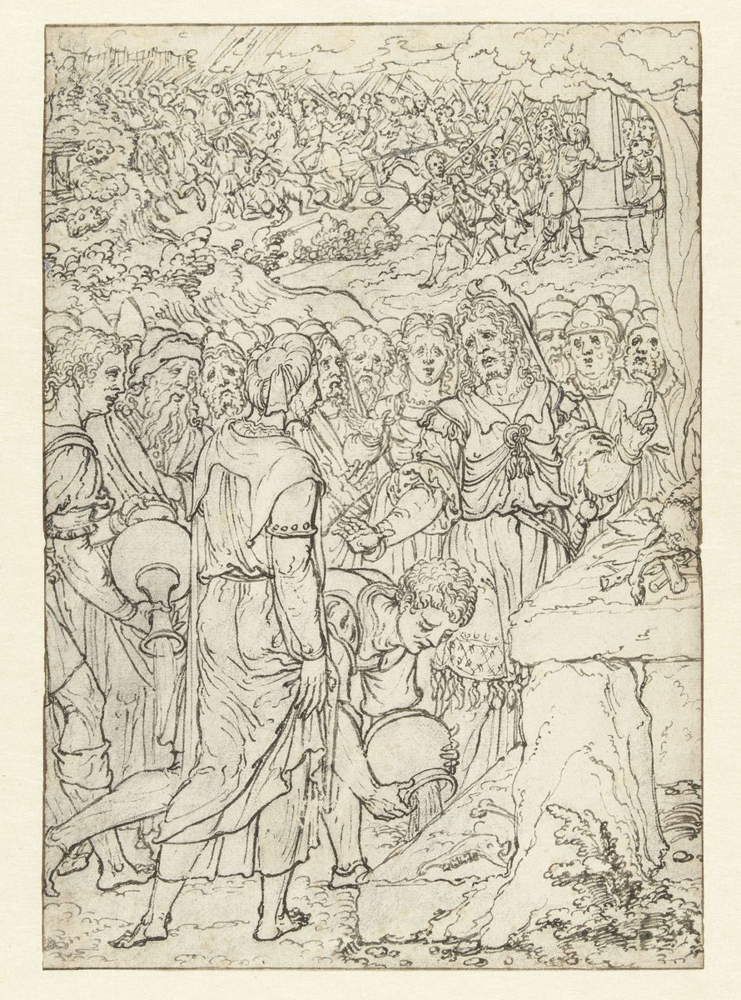

1 Samuel 7 — La Traducción Mister

El título neerlandés es el del museo, «Samuel offert een zooglam aan Jahwe». El dibujante reúne tres momentos del capítulo en una sola hoja: el agua derramada en Mizpá (versículo 6), el cordero de leche sobre el altar (versículo 9) y, detrás, los filisteos derrotados mientras Jehová truena (versículo 10).

Notas del traductor — versículo por versículo
La casa de Abinadab. Los hombres de Quiriat-jearim responden al llamado de 6:21 (ya en estas páginas) y llevan el arca «a la casa de Abinadab en la colina». En la colina es bagiv‘ah, que también puede leerse como nombre de lugar, Guibeá. La RV60 tiene «en casa de Abinadab, situada en el collado»; la NVI «a la casa de Abinadab, que estaba en una loma». «Consagraron a Eleazar su hijo para que guardara el arca de Jehová»: qiddeshu, «lo hicieron santo», y shamar, «guardar, custodiar». El texto no dice de qué tribu era la familia; Josefo llama a Abinadab «levita de linaje» (Antigüedades 6.18, numerado 6.1.4 en Whiston). La TNM 1987 tiene «y a Eleazar su hijo lo santificaron para que guardara el arca de Jehová», conservando el orden del hebreo.
Veinte años, y un lamento. «Los días se multiplicaron y llegaron a ser veinte años»: los veinte años llegan hasta la asamblea de Samuel en Mizpá, no hasta el final de la estancia del arca, porque el arca sigue en la casa de Abinadab cuando David va por ella (2 Samuel 6:3). «Toda la casa de Israel se lamentó en pos de Jehová»: el verbo es naha, una palabra rara que en otros lugares se usa del llanto por los muertos (Ezequiel 32:18; Miqueas 2:4, ninguno todavía en estas páginas). La RV60 tiene «toda la casa de Israel lamentaba en pos de Jehová»; la TNM 2019 «todos los de la casa de Israel se pusieron a buscar a Jehová»; la NVI «todo el pueblo de Israel buscaba con ansiedad». El griego tiene otro verbo más, que Israel «miró en pos» del Señor.
«Quiten los dioses extranjeros». «Si con todo su corazón se vuelven a Jehová», shuv, «quiten de en medio de ustedes los dioses extranjeros»: las palabras de Jacob, «Quiten los dioses ajenos que hay entre ustedes» (Génesis 35:2), y de Josué en Siquem (Josué 24:23, los dos ya en estas páginas), y lo que hizo Israel en los días de Jefté: «Quitaron de en medio de sí los dioses extranjeros y sirvieron a Jehová» (Jueces 10:16, ya en estas páginas). Extranjeros es nekhar. «Fijen su corazón en Jehová y sírvanle solo a él», y el versículo 4 cuenta que «sirvieron solo a Jehová». La RV60 tiene «preparad vuestro corazón a Jehová, y solo a él servid»; la TNM 1987 «dirijan su corazón inalterablemente a Jehová y sírvanle solo a él».
Los baales y las astarot. Las dos palabras son plurales: los muchos baales locales y las imágenes de Astoret, la diosa cuyo plural es ashtarot. Jueces usa el mismo par para la apostasía que abre las opresiones: «sirvieron a los baales y a las astarot» (Jueces 10:6, ya en estas páginas). La RV60 tiene «quitaron a los baales y a Astarot»; la NVI «las imágenes de Astarté». El griego tiene «los bosques» por las astarot en el versículo 3 y «los bosques de Astarot» en el versículo 4.
Agua derramada. En Mizpá «sacaron agua y la derramaron delante de Jehová, y ayunaron aquel día». Ninguna ley de la Torá prescribe este rito, y el capítulo no lo explica. Lamentaciones tiene la imagen más cercana, «derrama como agua tu corazón ante la presencia del Señor» (Lamentaciones 2:19, ya en estas páginas). Josefo dice que sacaron agua y la derramaron como libación a Dios (Antigüedades 6.22, numerado 6.2.1 en Whiston). El griego añade que la derramaron «sobre la tierra». La confesión es breve: «Hemos pecado contra Jehová», como clamó Israel en Jueces, «Hemos pecado contra ti» (Jueces 10:10, ya en estas páginas). La RV60 tiene «sacaron agua, y la derramaron delante de Jehová, y ayunaron aquel día»; la TNM 1987 «guardaron un ayuno en aquel día».
«Samuel juzgó». «Y Samuel juzgó a los hijos de Israel en Mizpá»: el verbo de los shofetim, los jueces que Jehová «levantó» para librar a Israel (Jueces 2:16, ya en estas páginas), y el lugar donde todo Israel se había reunido «ante Jehová en Mizpá» contra Benjamín (Jueces 20:1, ya en estas páginas). Los versículos 15–17 vuelven a ello tres veces. Josefo explica el nombre Mizpá como «atalaya» (Antigüedades 6.22). La RV60 tiene «juzgó Samuel a los hijos de Israel en Mizpa»; la NVI «Samuel comenzó a liderar a los israelitas».
«No guardes silencio». Los príncipes de los filisteos se enteran de la reunión y suben contra ella, e Israel tiene miedo. «No guardes silencio, dejando de clamar por nosotros a Jehová nuestro Dios»: el verbo es charash, callar, y el clamor es za‘aq, el grito de angustia. La RV60 tiene «No ceses de clamar por nosotros a Jehová nuestro Dios»; la TNM 1987 «No guardes silencio, por consideración a nosotros, de clamar a Jehová nuestro Dios por socorro».
Un cordero de leche, un holocausto entero. Samuel toma «un cordero de leche»; la expresión teleh chalav aparece en un solo versículo de la Biblia hebrea. Lo ofrece «entero en holocausto», olah kalil, la «ofrenda entera sobre tu altar» de la bendición de Moisés sobre Leví (Deuteronomio 33:10, ya en estas páginas). El texto escrito tiene «y ofreció», el margen «y lo ofreció». El griego añade que lo ofreció «con todo el pueblo». La RV60 tiene «lo sacrificó entero en holocausto a Jehová»; la TNM 1987 «como ofrenda quemada, una ofrenda entera». «Samuel clamó a Jehová por Israel, y Jehová le respondió».
Trueno «con gran voz». Mientras el cordero aún arde, los filisteos se acercan, «y Jehová tronó con gran voz aquel día contra los filisteos». El verbo es ra‘am, «tronar», el verbo del cántico de Ana, «contra ellos truena en los cielos» (1 Samuel 2:10, ya en estas páginas): su hijo ora, y sucede. Voz es qol, la palabra que el Éxodo usa para los truenos de la plaga del granizo (Éxodo 9:23, ya en estas páginas). «Sembró confusión en ellos», hamam, como sembró confusión en los reyes amorreos «delante de Israel» en Gabaón (Josué 10:10, ya en estas páginas), «y fueron derrotados delante de Israel», el verbo de la derrota en Eben-ezer, «Israel fue derrotado delante de los filisteos» (1 Samuel 4:2, ya en estas páginas). La RV60 tiene «Jehová tronó aquel día con gran estruendo sobre los filisteos, y los atemorizó»; la TNM 1987 «para ponerlos en confusión». Josefo añade un terremoto que abrió grietas bajo los filisteos, relámpagos que parecían quemarles la cara y armas arrancadas de sus manos (Antigüedades 6.27, numerado 6.2.2 en Whiston).
Bet-car. Israel persigue «hasta debajo de Bet-car», «casa del cordero» o «del pasto»; el nombre aparece en un solo versículo de la Biblia hebrea, y el lugar es desconocido. Josefo llama al final de la persecución un lugar llamado Korraia (Antigüedades 6.28). La RV60 tiene «hiriéndolos hasta abajo de Bet-car»; la TNM 1987 «hasta el sur de Bet-car».
«Hasta aquí nos ayudó Jehová». «Samuel tomó una piedra», even ajat, y la llamó Eben-ezer, «piedra de ayuda»; ‘ezer es la palabra de la «ayuda que le corresponda» (Génesis 2:18, ya en estas páginas; ezer kenegdo). El nombre aparece en tres versículos de la Biblia hebrea: el campamento de la derrota (1 Samuel 4:1), el lugar de donde se llevaron el arca (5:1, los dos ya en estas páginas), y aquí, donde se explica; si esta piedra está en el campo de batalla del capítulo 4, el texto no lo dice. «Hasta aquí», ‘ad-hennah, es a la vez «hasta este lugar» y «hasta ahora». La RV60 tiene «Hasta aquí nos ayudó Jehová»; la TNM 1987 «Hasta ahora nos ha ayudado Jehová». Josefo llama a la piedra «Fuerte», señal de la fuerza que Dios les dio (Antigüedades 6.28, numerado 6.2.2 en Whiston).
Sen o Jesaná. La piedra está «entre Mizpá y Sen»; shen es «diente», quizá un peñasco. El griego lee «la Vieja», la ciudad de Jesaná, y varias traducciones lo siguen. La TNM 1987 tiene «entre Mizpá y Jesaná»; la RV60 «entre Mizpa y Sen»; la NVI «entre Mizpa y Sen». La TNM 2019 también dice Jesaná.
Los filisteos sometidos. «Así fueron sometidos los filisteos» es la fórmula de Jueces, «Así fue sometido Moab aquel día bajo la mano de Israel» (Jueces 3:30; compárese 8:28 y 11:33, todos ya en estas páginas), aquí sin el cierre «y la tierra reposó». «No volvieron a entrar en el territorio de Israel … todos los días de Samuel», aunque a los pocos capítulos hay guarniciones filisteas en la tierra (1 Samuel 10:5, ya en estas páginas, y 13:3, también ya en estas páginas); el versículo habla de los días de Samuel, y el libro deja las dos cosas una junto a otra. La RV60 tiene «Así fueron sometidos los filisteos, y no volvieron más a entrar en el territorio de Israel»; la NVI «no volvieron a invadir su territorio». Josefo dice que después de la derrota los filisteos «ya no hicieron expediciones contra los israelitas» (Antigüedades 6.29, numerado 6.2.3 en Whiston).
Desde Ecrón hasta Gat. «Las ciudades que los filisteos habían tomado a Israel volvieron a Israel, desde Ecrón hasta Gat», las dos ciudades filisteas más cercanas a Israel, que habían retenido el arca las dos (1 Samuel 5:8–10, ya en estas páginas). El griego dice «desde Ascalón hasta Azob». «Hubo paz entre Israel y los amorreos», el viejo nombre de los pueblos de la tierra, como en «la iniquidad del amorreo no ha llegado aún a su colmo» (Génesis 15:16, ya en estas páginas); Josefo dice que el resto de los cananeos estaba en amistad con Israel en aquel tiempo (Antigüedades 6.30). La RV60 tiene «desde Ecrón hasta Gat»; la NVI «hubo paz entre Israel y los amorreos».
El recorrido. «Samuel juzgó a Israel todos los días de su vida», el último de los jueces en la línea del libro de los Jueces. «Cada año iba y recorría», sabab, el verbo del arca que «pasaba» por las ciudades filisteas (1 Samuel 5:8, ya en estas páginas), ahora de un juez que da la vuelta por las ciudades de Israel. Betel, donde estaba el arca en los días de Finees (Jueces 20:27, ya en estas páginas), Gilgal y Mizpá son todos lugares de asambleas anteriores. La RV60 tiene «todos los años iba y daba vuelta a Bet-el, a Gilgal y a Mizpa»; la TNM 1987 «hacía el circuito de Betel y Guilgal y Mizpá». El griego termina el versículo «en todos estos lugares consagrados».
Su casa en Ramá. «Su regreso era a Ramá, porque allí estaba su casa»: la casa de Elcaná y Ana, «su casa en Ramá» (1 Samuel 1:19; 2:11, los dos ya en estas páginas). El griego la llama Armatáyim, el Ramataim de 1:1. «Edificó allí un altar a Jehová», un mizbeach en su propia ciudad, mientras el arca sigue en Quiriat-jearim; el narrador no lo comenta. La RV60 tiene «Después volvía a Ramá, porque allí estaba su casa»; la TNM 1987 «Y procedió a edificar allí un altar a Jehová».
Patrones que vale la pena recordar
Dónde esta traducción mantiene las palabras exactas y distintas: «se lamentó en pos de» para naha; «quiten los dioses extranjeros», como en Génesis 35:2, Josué 24:23 y Jueces 10:16; «los baales y las astarot», como en Jueces 10:6; «holocausto entero» para olah kalil; «tronó» para ra‘am, como en 1 Samuel 2:10; «sembró confusión» para hamam, como en Josué 10:10; «derrotados delante de», como en 1 Samuel 4:2; «Hasta aquí nos ayudó Jehová»; «sometidos», como en Jueces 3:30; «recorría» para sabab; y «juzgó».
Ecos pagados. Eben-ezer, usado como nombre en los capítulos 4 y 5, se explica; el «truena en los cielos» de Ana (2:10) se cumple para su hijo; «Israel fue derrotado delante de los filisteos» (4:2) se da la vuelta; y el arca enviada hacia Quiriat-jearim (6:21) llega.
Ecos sembrados. Las guarniciones filisteas de 1 Samuel 10:5, ya en estas páginas, y de 13:3, también ya en estas páginas, y David sacando el arca de la casa de Abinadab (2 Samuel 6:3).
Próxima entrega de este libro: 1 Samuel 8 — Samuel envejece y pone a sus hijos como jueces en Beerseba, pero aceptan sobornos; los ancianos van a Ramá y piden un rey «como todas las naciones», y Samuel les dice lo que un rey les quitará.